供養絵額；柳玄寺
遠野の街中を流れる来内川。
寺町もその来内川によって南北に分けられている。その南サイドの川沿いに柳玄寺はある。
今回の供養絵額ツアーの最終地である。
どうどうと惜し気もなく綺麗な水が流れる川沿いを歩いていくと柳玄寺の山門が見えて来る。
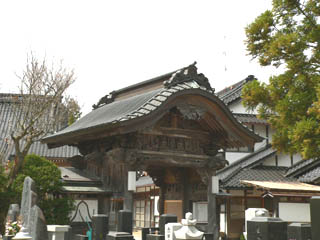
門は比較的新しそうだが、門の内側や欄間にかなりイイ感じの彫刻が施されている。
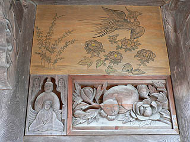 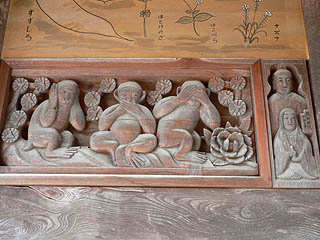
こんな感じ。眠り猫、三猿と左甚五郎魂全開。猿の上には七草が描かれている。
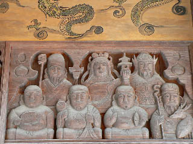 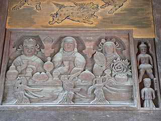
こちらは七福神とあとなんでしょう？右の埴輪みたいなのが結構好きです。
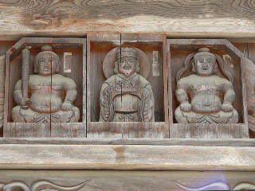
左右に仁王と真ん中は・・・何だ？
これだけ語りまくる山門も珍しい。しかも彫刻だけでなく、イラスト付き。こうなってくると語るというより叫ぶ門とでも言いたくなって来る。
何だか偉そうな神様がいっぱいいるので凄く重そうな門だ。
本堂にあがると粱に目が釘付け。先程の門の彫刻と同じような彫刻が施されている。しかも色付き。
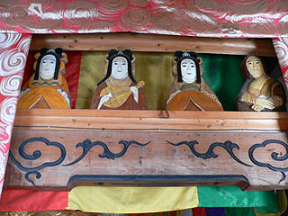 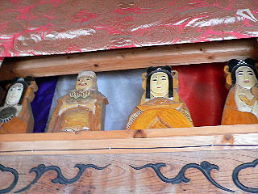
しかし、微妙に作風が違う。コレを見ると山門の彫刻は上手いんだなあ、と思わせる。
大黒さんに聞くと山門の彫刻を手掛けたのは市川さんという大工さん。山門全体の工事も手掛けたというから宮大工さんなのだろう。
で、こちらの彫刻は、その市川さんの仕事にインスパイアされた人がつくったらしい。
私としてはこちらの方が好きなのだが、大黒さん、それについてはあまり触れたがらないので敢えて聞きますまい。もしかしたら住職がやっちゃったのか？
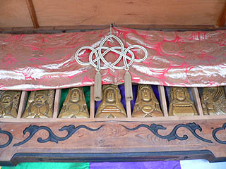 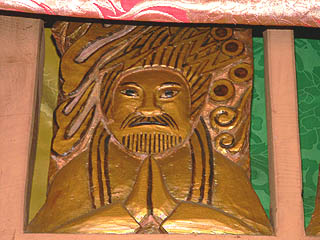
金ピカに塗られた仏像軍団。世田谷七福神を彷佛とさせる彫像だ。
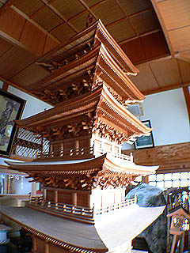
大黒さんに案内されて奥の部屋に行くと、市川さんが製作したという五重塔の模型が置いてあった。かなり精緻な模型だ。
五重塔の周りは雑然としていて、物置きのようになっているがそんな中に山の神やオシラサマがいたりするところが遠野の奥深いところである。
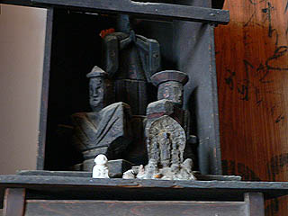 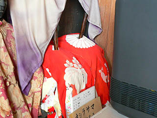
で、絵額である。
絵額は本堂と客殿（庫裏？）の間のかなり狭い通路に掛かっている。
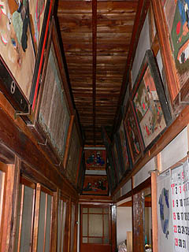
・・・コレ、かなり撮りにくかったんですよねえ・・・
と言う訳で、画面歪み放題歪んでます。すまん。
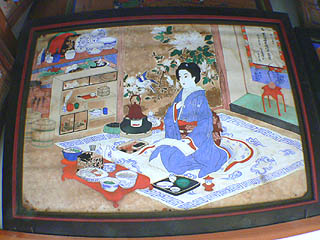
こちらは女性がひとりで食事をする絵額。享年は17才。いくら御馳走でもやっぱりひとりで食事は寂しいですな。
供養絵額は大抵複数が描かれるので、ソロの絵額はやはり寂しさがにじみ出ているような気がする。
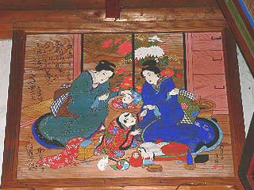 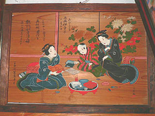
女性ふたりと子供の図。仕候の作。
絵額に描かれる人物の関連性はどうなっているのだろう。一般的には夫婦、親子が同一画面に描かれるのは分かるが、成人女性二人と子供という絵はどう理解したらよいのだろう？姉妹？それとも友達？
絵額を奉納するタイミングも謎だ。例えば山形のムカサリ絵馬などは巫女であるオナカマがお宣託をするらしいが、この供養絵額も遠野の巫女などにみてもらうのだろうか？それとも「そろそろ3回忌だから奉納するか」といったノリだったのだろうか。絵額の中には製作年が記載されているものもある。それらは故人の没年の1〜2年後が多い。これは1周忌、または3回忌にあわせて奉納した可能性が強い。かといって当時の様子を知るものも殆どいない今、真相は謎だ。
没年から上の2点はいずれも仕候初期の作と思われる。
仕候がいつ頃から絵額を描いていたのかは定かではないが、明治に入ってから、自分の年令を書き込み始めた。その辺からプロの絵額師になったということなのだろうか。あるいは仕候自身「これは後世に残るモノになるぞ」と踏んだのかも知れない。
年令が始めて登場したのは明治3年、60才の事である。それ以降、仕候の怒濤の快進撃がはじまり、それは遠野の供養絵額全体のピークシーズンにもなっていくのだ。
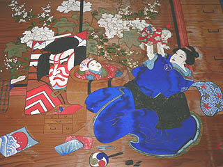 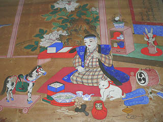
絵額を見ていてやはり感動的なのはコドモの描かれているものだ。
子供を得られなかった夫婦、未婚の人、幼くして亡くなった子供、そんな人達へのやりきれない思いが絵額の製作に向かわせたのだろう。
最初に述べた通り、供養絵額の習俗は大正に入って消滅する。写真の普及による遺影（化真）奉納がそれにとってかわったと考えられる。
供養絵額はみな、一点モノの絵画でどれも生前の美化された生活や願望を含んだ冥界の姿が描かれている。そのバラエティさ、複雑さが仇となり比較的簡易な遺影奉納にシフトしていったのだろうと思われる。まるで複雑な進化を遂げ過ぎたげゆえに絶滅してしまった生物のようでもあり、どこかはかない。
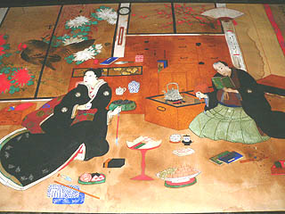
絵額の消滅には勿論、遠野の供養絵額の多くを手掛けた外川仕候の死も関係して来るのだろう。
そういえば仕候自身の供養絵額というものはあったのだろうか？
仕候の菩提寺はこの寺町の一画の萬福寺。そこにはかつて絵額はあったが今はないという。
以上、供養絵額ツアーは終了である。勿論、全ての絵額を挙げた訳ではないし、他の寺にもたくさん絵額は存在する。
あとは興味を持った方が遠野に行って見て、絵額に込められた思いをどっしりと感じて欲しい。
おしまい
長泉寺 常楽寺 西来院 喜清院 光岸寺 善明寺 瑞応院 柳玄寺
供養絵額トップページに戻る
珍寺大道場 HOME